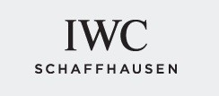
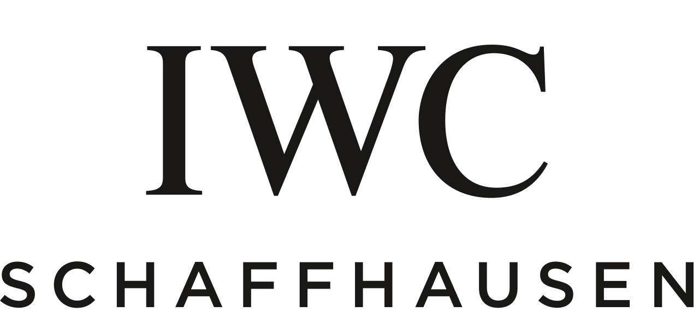
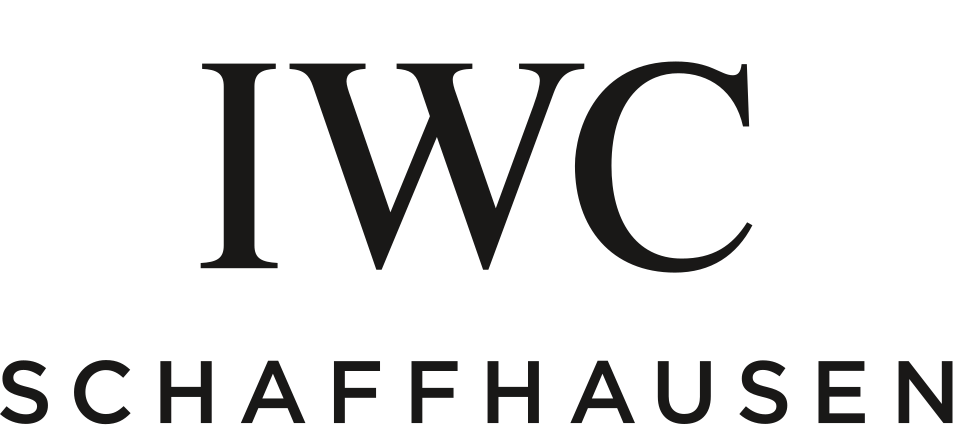

홈 > 브랜드 매거진 > IWC
IWC
IWC(International Watch Company)는 1868년 스위스 샤프하우젠에서 설립된 고급 시계 제조사이다.
산업 분야 패션·럭셔리 · 공개 등급 자료 기반 · 브랜드 평가 4.3 ★


한눈에 보는 브랜드
IWC(International Watch Company)는 1868년 미국 뉴햄프셔 출신 시계제작자 플로렌타인 아리오스토 존스가 스위스 샤프하우젠에 세운 시계 제조사다. 존스는 보스턴 시계업체에서 쌓은 미국식 기계화 생산 방식과 스위스 장인의 정밀 수작업을 결합한다는 구상으로, 라인강 수력을 동력원으로 삼을 수 있는 샤프하우젠을 거점으로 택했다.
현재는 스위스 리치몬트 그룹의 전문 시계 부문에 속한 마이송으로, 스위스 럭셔리 시계 시장에서 브랜드 가치 상위권에 꼽히는 규모를 갖추고 있다.
브랜드 관점
포지셔닝의 핵심은 공학 중심 정체성이다. 무브먼트 자급과 1,000시간 품질 테스트로 정평이 난 예거르쿨트르가 정통 제조력을 앞세운다면, IWC는 항공 파일럿 워치 헤리티지와 견고한 도구 시계, 영구 캘린더 같은 복잡 기능을 묶은 기술적 남성 영역을 차지한다.
일상성과 접근성을 강조하는 오메가와 달리, IWC는 한정된 생산과 높은 잔존가치(표준 모델 가치 하락 약 10퍼센트 수준)를 지향한다. 리치몬트 시계 부문에서 포르투기저와 파일럿 라인은 매출 축이며, 한국 럭셔리 워치 시장에서도 백화점 부티크와 정식 멀티숍을 통해 엔지니어링 이미지로 소비된다.
시작과 성장
창업은 1868년이다. 존스는 동업자 찰스 키더와 함께 스위스 전역을 답사한 끝에 샤프하우젠에 회사를 세우고, 미국식 기계 설비로 부품을 만들고 스위스 숙련공이 마감하는 생산 모델을 도입했다.
자본난으로 1880년 라우셴바흐 가문에 넘어갔고 존스는 1870년대 중반 미국으로 돌아갔으나, 정밀 제조와 장인정신의 결합이라는 원형은 그대로 이어졌다. 1939년 두 명의 포르투갈 상인 요청으로 회중시계 무브먼트를 손목시계에 얹은 포르투기저가 탄생했고, 1936년 이후 항공 시대를 배경으로 파일럿 워치 계보가 자리 잡았다.
2000년 리치몬트가 모기업 LMH를 약 28억 스위스프랑에 인수하면서 IWC는 리치몬트 산하로 편입됐다.
브랜드 아이덴티티
핵심 가치관은 시계제작을 공학으로 보는 관점이다. 브랜드 메시지도 1868년을 기점으로 한 엔지니어링 서사를 축으로 삼는다.
초기 식별 문양으로 쓰인 물고기 도안은 정밀과 견고함을 상징하며 역사적 상징물로 남아 있다. 타깃은 기술과 기계 미학에 가치를 두는 성취 지향 고객층이며, 보이스는 절제되고 정밀하며 과장 없는 기술 서술형 어조다.
항공·해양 도구 시계와 클래식 드레스 라인을 함께 운용해 강인함과 우아함을 병치한다.
제품과 서비스
대표 라인은 회중시계 유산을 계승한 포르투기저, 항공 헤리티지의 파일럿(마크·빅 파일럿·탑건), 이탈리아 리비에라에서 이름을 딴 드레스 라인 포르토피노다. 가격대는 강철 모델 수천 달러대에서 귀금속·복잡기능 모델 수만 달러대까지 폭넓게 형성된다.
채널은 직영 부티크, 정식 리테일 파트너, 백화점 멀티숍과 공식 온라인이다.
현재 상태
모회사는 스위스 리치몬트 그룹이며 본사와 제조 거점은 샤프하우젠에 있다. 2024년 제네바 워치스 앤드 원더스에서 4,500만 년 주기 문페이즈를 갖춘 포르투기저 이터널 캘린더를 포함한 신작 컬렉션을 공개했다.
IWC 단독의 연간 매출과 생산량 등 세부 수치는 리치몬트가 전문 시계 부문 통합 실적으로만 공시해 개별 단위로는 공개되지 않는다.
타임라인
BI/CI 변천사

대표 로고대표 브랜드 마크함께 읽을 브랜드
오메가(OMEGA)는 스위스 스와치 그룹 산하의 럭셔리 시계 제조 브랜드이다.
 패션·럭셔리 · 편집 검수롤렉스
패션·럭셔리 · 편집 검수롤렉스롤렉스(Rolex)는 스위스 제네바에 본사를 둔 럭셔리 시계 제조사이다.
 패션·럭셔리 · 편집 검수조르지오 아르마니
패션·럭셔리 · 편집 검수조르지오 아르마니조르지오 아르마니(Giorgio Armani)는 1975년 밀라노에서 설립된 이탈리아 럭셔리 패션 하우스이다.
 패션·럭셔리 · 자료 기반돌체앤가바나
패션·럭셔리 · 자료 기반돌체앤가바나돌체앤가바나(Dolce & Gabbana)는 1985년 도메니코 돌체와 스테파노 가바나가 설립한 이탈리아 럭셔리 패션 하우스이다.
 패션·럭셔리 · 자료 기반펜디
패션·럭셔리 · 자료 기반펜디펜디(Fendi)는 1925년 로마에서 설립된 이탈리아 럭셔리 모피·가죽제품 하우스이다.
 패션·럭셔리 · 편집 검수디젤
패션·럭셔리 · 편집 검수디젤디젤(Diesel)은 1978년 렌조 로소가 이탈리아 브레간체에서 설립한 데님 중심의 컨템포러리 패션 브랜드다. 도발적이고 실험적인 디자인으로 데님 헤리티지를 재해석...
 패션·럭셔리 · 편집 검수랄프 로렌
패션·럭셔리 · 편집 검수랄프 로렌랄프 로렌(Ralph Lauren)은 1967년 미국에서 설립된 럭셔리 라이프스타일·패션 브랜드이다.
 패션·럭셔리 · 편집 검수버버리
패션·럭셔리 · 편집 검수버버리버버리(Burberry)는 1856년 설립된 영국의 럭셔리 패션 하우스이다.